The Very First Rule of Life
If there's a microphone anywhere near you, assume it's hot and sending whatever you're saying to the world. Seriously.
...
This is a simple tea round organiser with various distractions built in for idle distraction. People join groups and the site picks who makes the tea. The site is flash sitting in front of a Django REST API. Rabbitmq and Celery are used to queue the emails being sent.
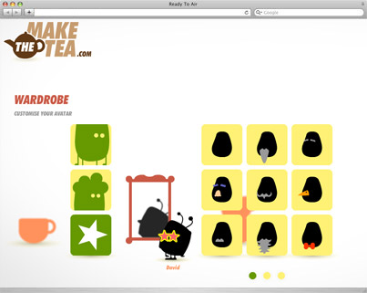 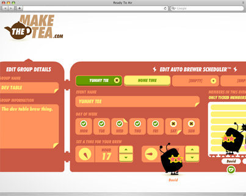This is a reboot of Queen's website to coincide with the band's 40th Anniversary. The site uses Django-CMS, is supported with various Django modules that hook into memcache and the media files are served through Amazon CloudFront.
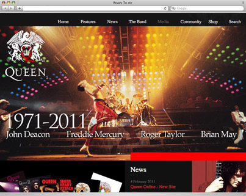 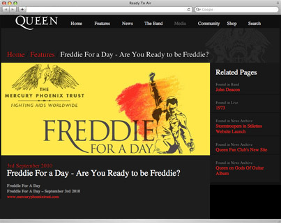SackBoy WordPress Theme for Media Molecule as part of the launch of their new website to tie in with the release of Little Big Planet.
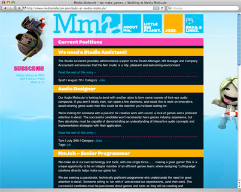 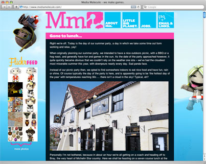Deployed using of Struts on Tomcat using JDK v1.4. Hibernate is the ORM layer connecting to MS SQL server. The flash games on the site communicate with the Struts application via XML feeds. The code quality was tested using JUnit and StrutsTestCase.
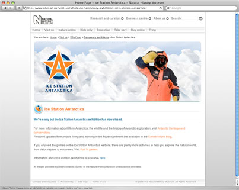 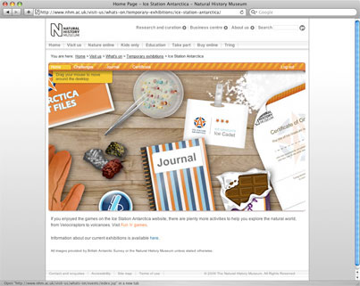A video preview site created for channel 4. Developed in the symfony framework and uses phpgacl for fine-grained access to the videos.
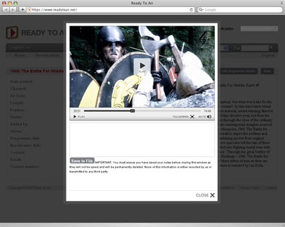 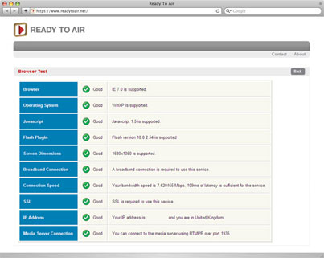An open forum based around the theme of music’s effects on our beliefs. All submissions are moderated. The site is a flash front-end with an Orqi back-end.
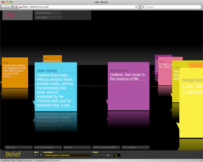 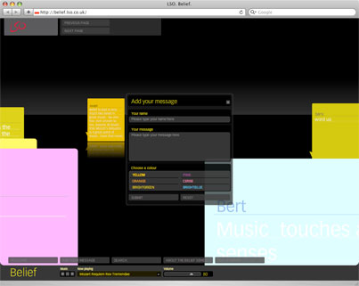Promotion based site with send to friend functionality, PDF generation using FPDF and controlled by a back end CMS. Developed using Orqi.
Flshcrd is a vocabulary building application based on the Leitner-system. Its front end is built to run on mobile devices and desktops and supports any language in the tests.
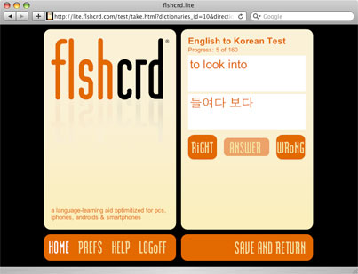 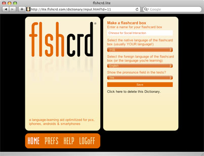Involved in the architecture for the flash and the HTML barley templates.
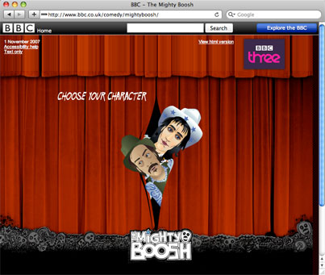 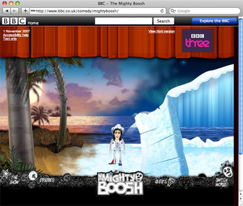If there's a microphone anywhere near you, assume it's hot and sending whatever you're saying to the world. Seriously.
...